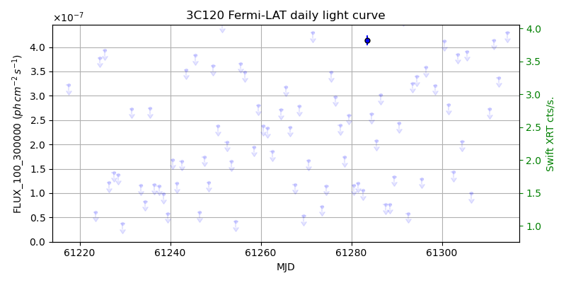
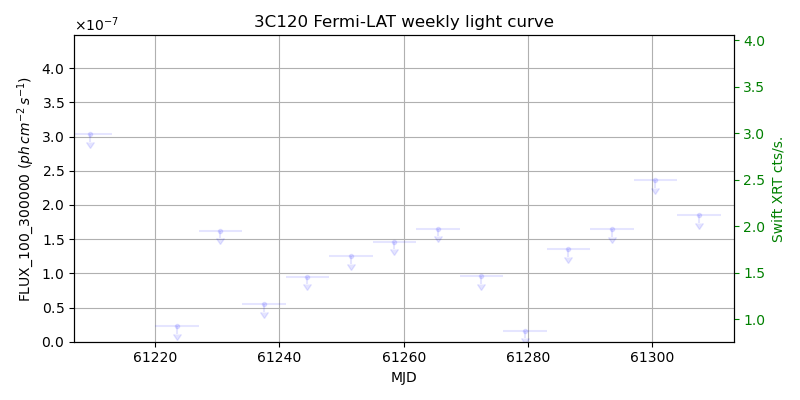
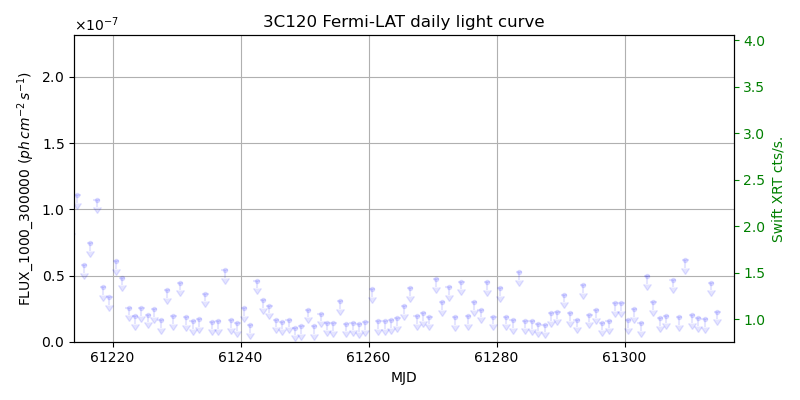
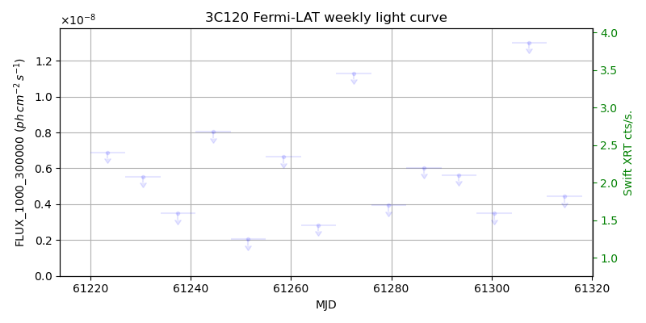

LAT Lightcurve site: https://fermi.gsfc.nasa.gov/ssc/data/access/lat/msl_lc/source/3C_120
Swift site: https://www.swift.psu.edu/monitoring/source.php?source=3C120
NED: Query
Time of last update of this page: UT: 2026-10-02 15:15 (MJD: 61315.635)
| Property | Value |
|---|---|
| R.A. | 4:33:11.04 |
| Dec. | 5:21:14.4 |
| z | 0.033 |
| 3FGL SpectrumType | |
| 3FGL PL Index | -1.00 |
| 3FGL Flux_100_300000 | -1.00e+00 |
| 3FGL Flux_1000_300000 | -1.00e+00 |
| 3FGL Flux >200 GeV | -1.00e+00 |
| 3FGL Extrap. Crab >200 GeV | -1.00 |
| 3FGL Flux After EBL Absorption >200GeV | -1.00e+00 |
| 3FGL EBL Crab Fraction >200GeV | -1.00 |

| MJD | dMJD | Flux | dFlux | Frac3FGL | FracCrab>200GeV | EBLFracCrab>200GeV |
|---|---|---|---|---|---|---|
| 61310.50 | 0.50 | 2.73e-07 | 0.00e+00 | 0.00 | 0.00 | -0.00 |
| 61311.50 | 0.50 | 4.14e-07 | 0.00e+00 | 0.00 | 0.00 | -0.00 |
| 61312.50 | 0.50 | 3.37e-07 | 0.00e+00 | 0.00 | 0.00 | -0.00 |
| 61313.50 | 0.50 | 5.48e-07 | 0.00e+00 | 0.00 | 0.00 | -0.00 |
| 61314.50 | 0.50 | 4.29e-07 | 0.00e+00 | 0.00 | 0.00 | -0.00 |

| MJD | dMJD | Flux | dFlux | Frac3FGL | FracCrab>200GeV | EBLFracCrab>200GeV |
|---|---|---|---|---|---|---|
| 61279.50 | 3.50 | 1.62e-08 | 0.00e+00 | 0.00 | 0.00 | -0.00 |
| 61286.50 | 3.50 | 1.36e-07 | 0.00e+00 | 0.00 | 0.00 | -0.00 |
| 61293.50 | 3.50 | 1.65e-07 | 0.00e+00 | 0.00 | 0.00 | -0.00 |
| 61300.50 | 3.50 | 2.36e-07 | 0.00e+00 | 0.00 | 0.00 | -0.00 |
| 61307.50 | 3.50 | 1.85e-07 | 0.00e+00 | 0.00 | 0.00 | -0.00 |

| MJD | dMJD | Flux | dFlux | Frac3FGL | FracCrab>200GeV | EBLFracCrab>200GeV |
|---|---|---|---|---|---|---|
| 61310.50 | 0.50 | 1.99e-08 | 0.00e+00 | 0.00 | 0.00 | -0.00 |
| 61311.50 | 0.50 | 1.77e-08 | 0.00e+00 | 0.00 | 0.00 | -0.00 |
| 61312.50 | 0.50 | 1.69e-08 | 0.00e+00 | 0.00 | 0.00 | -0.00 |
| 61313.50 | 0.50 | 4.45e-08 | 0.00e+00 | 0.00 | 0.00 | -0.00 |
| 61314.50 | 0.50 | 2.26e-08 | 0.00e+00 | 0.00 | 0.00 | -0.00 |

| MJD | dMJD | Flux | dFlux | Frac3FGL | FracCrab>200GeV | EBLFracCrab>200GeV |
|---|---|---|---|---|---|---|
| 61279.50 | 3.50 | 3.95e-09 | 0.00e+00 | 0.00 | 0.00 | -0.00 |
| 61286.50 | 3.50 | 6.04e-09 | 0.00e+00 | 0.00 | 0.00 | -0.00 |
| 61293.50 | 3.50 | 5.63e-09 | 0.00e+00 | 0.00 | 0.00 | -0.00 |
| 61300.50 | 3.50 | 3.48e-09 | 0.00e+00 | 0.00 | 0.00 | -0.00 |
| 61307.50 | 3.50 | 1.30e-08 | 0.00e+00 | 0.00 | 0.00 | -0.00 |
--------------------------------------------------------- Using user-supplied coords: 4:33:11.04 5:21:14.4 2000 --------------------------------------------------------- FLWO UT night of: 2026-10-03 Local Sid. @ Midnight: 00:24 Sunset (-15.0) (local, UT): 19:14 02:14 Sunrise (-15.0) (local, UT): 05:12 12:12 Moonrise (local, UT): 22:48 05:48 Moonset (local, UT): Moon phase: 0.53 --------------------------------------------------------- AzTime LSID UT Obj_el Obj_az Mn_el Mn_az Sep. --------------------------------------------------------- 19:14 19:37 02:14 -32.9 58.0 -28.5 20.1 32.7 19:44 20:07 02:44 -27.3 63.7 -26.2 26.7 33.0 20:14 20:37 03:14 -21.4 68.8 -23.2 32.8 33.3 20:44 21:07 03:44 -15.4 73.5 -19.6 38.5 33.6 21:14 21:37 04:14 -9.2 77.8 -15.7 43.6 33.9 21:44 22:07 04:44 -1.7 81.8 -11.3 48.4 34.2 22:14 22:37 05:14 3.7 85.8 -6.5 52.7 34.5 22:44 23:07 05:44 10.0 89.7 -0.8 56.7 34.8 23:14 23:37 06:14 16.3 93.7 3.8 60.4 35.1 23:44 00:07 06:44 22.7 97.9 9.1 63.9 35.4 00:14 00:38 07:14 29.0 102.4 14.6 67.1 35.6 00:44 01:08 07:44 35.2 107.4 20.3 70.2 35.9 01:14 01:38 08:14 41.2 113.1 26.1 73.1 36.1 01:44 02:08 08:44 46.9 119.8 32.1 76.0 36.3 02:14 02:38 09:14 52.2 127.9 38.1 78.8 36.6 02:44 03:08 09:44 56.9 138.0 44.2 81.7 36.8 03:14 03:38 10:14 60.6 150.5 50.3 84.8 37.0 03:44 04:08 10:44 63.1 165.6 56.5 88.1 37.1 04:14 04:38 11:14 63.7 182.3 62.7 91.9 37.3 04:44 05:08 11:44 62.6 198.7 68.9 96.9 37.5 05:12 05:37 12:12 59.9 212.5 74.7 103.8 37.6 --------------------------------------------------------- Dark hours >55 deg.: 0.00